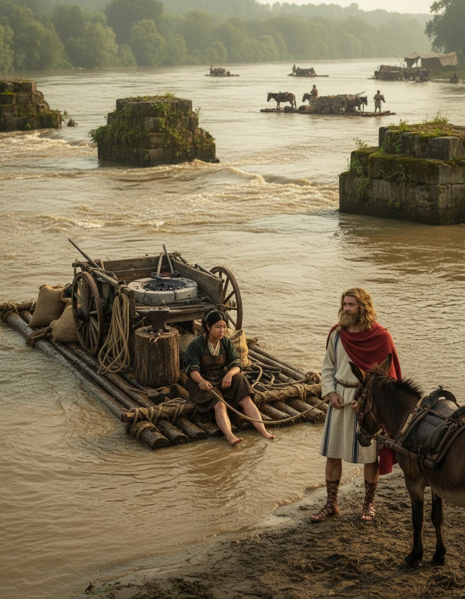
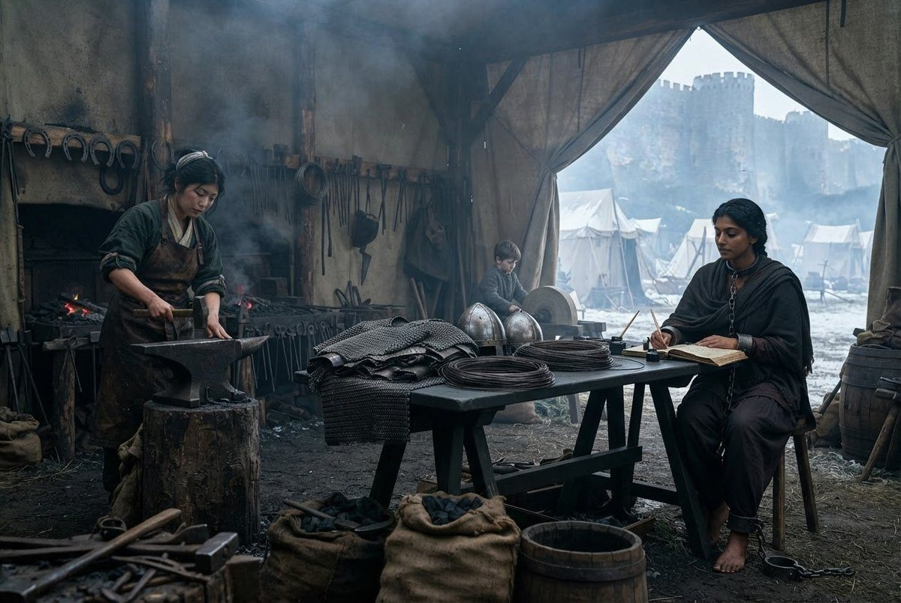
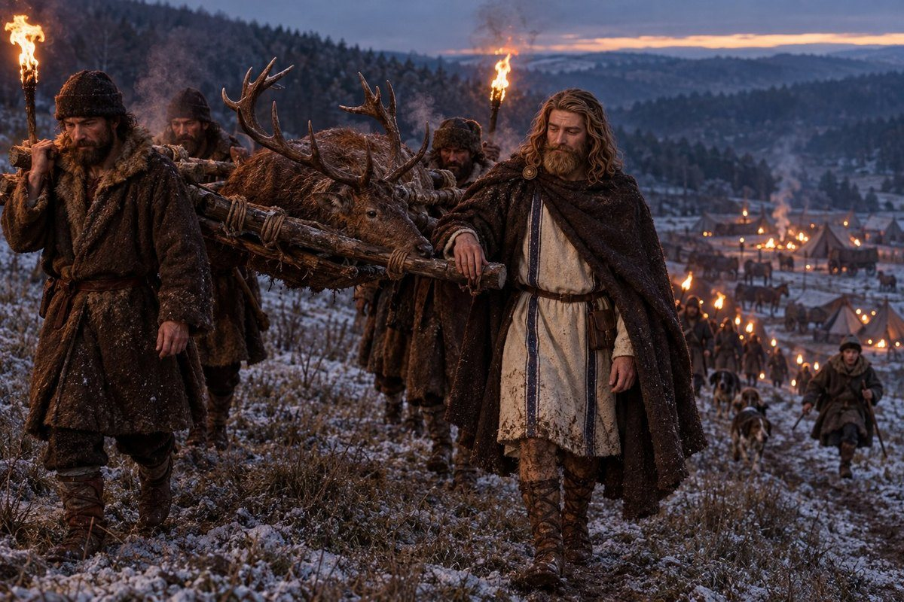
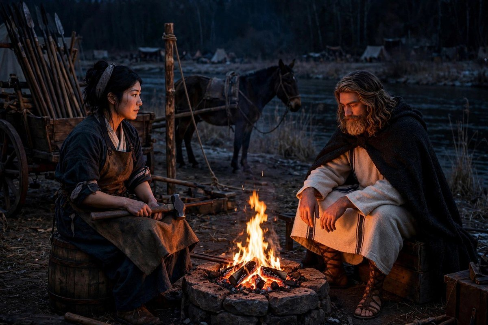
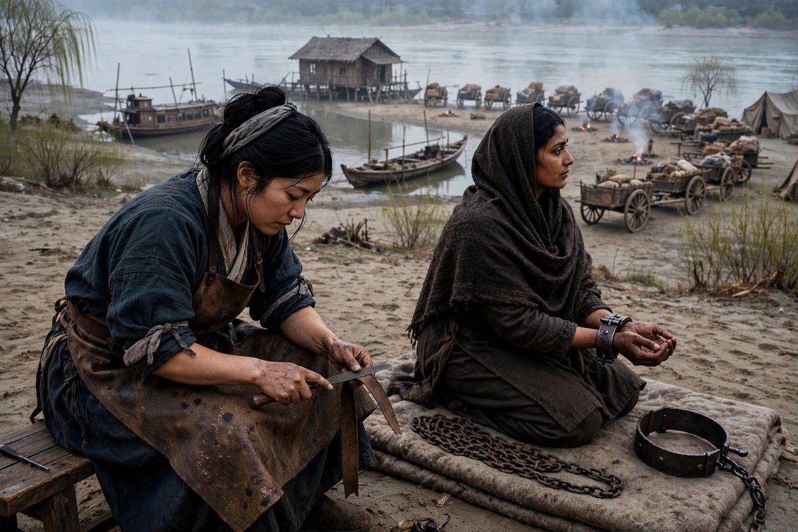
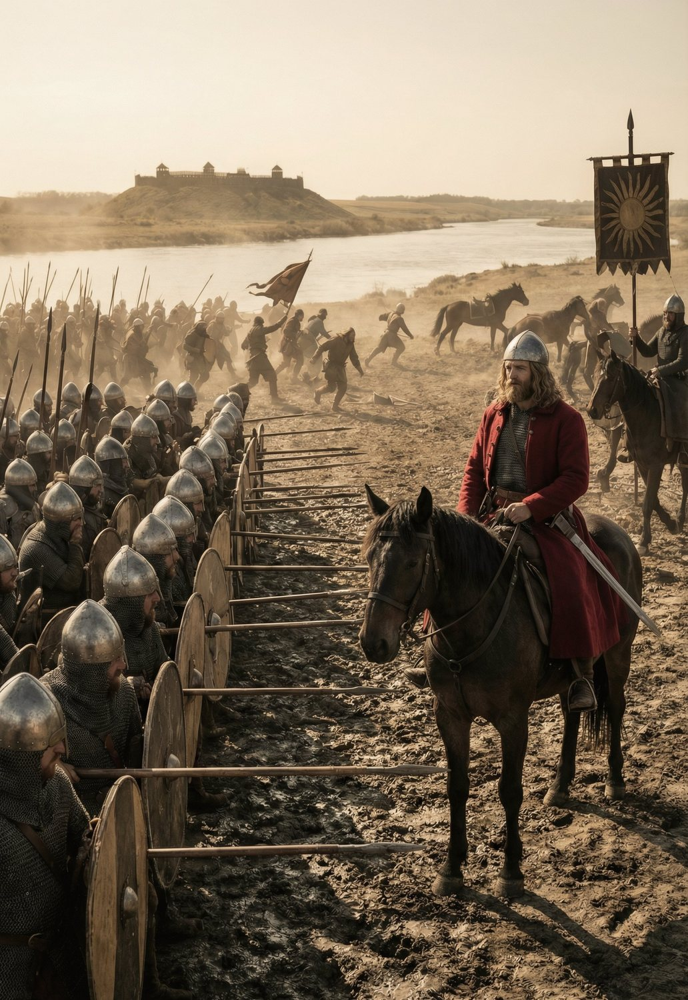

In the last chapter I wrote that in the eighth month of that year the men stopped calling him the young master. I have to open this one there, because everything in this chapter comes out of it, and because I watched it happen from twenty feet away with a hammer in my hand and did not know what I was watching until the winter.
We came out of Thrace in the fifth month of 880 with eleven carts, four hundred and eleven men, sixty-one horses that were not mules, and a chest that was heavier than it had been in the autumn. I know the number of men exactly. Counting is my business in this book the way it is a smith's business: I count what goes into a forge and I count what comes out, and a company is the same arithmetic with worse manners and more legs.
The road north went Haskovo in the sixth month, where the old road turns; then Tarnovgrad, which is a hill with a river round three sides of it and a hundred churches stacked up the slope like grain in a bin; then Dbilin, and after Dbilin the hills gave out and there was nothing in front of us but the plain and the smell of water.
We crossed the Danube in the seventh month at a ford below a bridge that had been a bridge when the Romans were there and was now two piers and a story. The man who owned the boat at that crossing had sixteen people in his family and one boat and he had been waiting all his life for a company to come over that ford, and he charged us for eleven days and we paid it, and I helped build the raft for the forge and then I floated the forge across on it, and I sat on the anvil with my feet in the water and looked at the biggest river I had ever seen going the wrong way.

The country on the north side of that river is flat. It has no cities in it worth the word, a great deal of grass, about as many horses as people, and villages of wattle and a church and a well. The men who own it live up in the hills with their horses and come down twice a year, and they are called boyars, and every one of them has a walled yard and a cousin in somebody else's debt. In a country like that four hundred armed men walking through are not a merchant. The word they had for us was not *merchant* and was not *army*; it was a word for a thing that comes through once and eats, and the first boyar who sold us grain understood before we did what we had become.
We came to Galați on the seventh day of the eighth month, which is a fish town at a bend where the river takes a long step east and stops being anything you can shout across. The men were sick on the third day from the water and sick again on the ninth from the fish, and Virupaksha, who was sixty-five, spent a week in a cart with his hand on his chest and came out of it saying it was the smell and not his heart. There was no work for a company of four hundred men in Galați. We had come north because there is a war in the north every few years and because the north was where the money for a company of our size was going to be.
That is the road. Now the eighth month, and the roll, and the thing I have to put down first.
*** ## The rank
On the first day of the eighth month, on the meadow outside Râmnicu Sărat, four hundred and eleven men were mustered and the roll was read, and Tokifusa, who has read that roll out loud for nine years, read out at the head of it *the company of Captain Edouinos Silviades*. Then he stopped, because he had surprised himself, and looked up the meadow at the man on the tail of the cart. Nobody said anything. Four hundred men stood in a wet field and looked at their own captain and waited to see whether he would take it.
He took it. He did not smile and he did not make a speech and he did not do anything at all except nod at Tokifusa to go on reading. That is the ceremony. It lasted as long as it takes to read a name.
There was one line at the head of that roll that had been struck through and left there, and everybody who read it every month saw it and nobody proposed taking it off. It said *Biàn*, and a date in the second month of the year before, and *released*. Four hundred and eleven men, and a place in the column with nobody in it, which is the arithmetic of a company that has lost a man without losing him to anything it can name.
I want it written down plainly, before somebody a hundred years from now decides a king did it, that nobody gave him the rank. There was no king inside of six hundred miles who knew what our name was. The rank came out of the roll, and the roll came out of Tokifusa's hand, and Tokifusa's hand had been writing *the young master* at the top of that page since Cedi and had grown tired of it the way a man grows tired of a coat that fits.
It cost nothing to make and it cost him the one thing he had. A young master can be wrong in front of his own men, and they will say he is young. A captain cannot. He has not been able to be wrong in front of them since, not once, not even when he was, and I have watched him pay for that every month for three years. That is what a rank is. It is not a thing a man is given; it is a thing he can no longer put down.
The regiments came in the tenth month, one more of each kind — the armoured foot, the Armenian horse, the light horse, the Zhanmadao — and that is the ledger's way of saying what had been growing all summer finally got itself counted. The new regiments were not full. A regiment is a hundred men at full strength and these were sixty and seventy and eighty, and men came in off the roads of that country all through the winter to fill them, because there was grass and there was food and there was a captain who paid.
By the fourth month of 881 there were fourteen hundred souls with that company and twelve hundred of them on the roll, forty carts, a herd of mules, a forge on a wagon with a crane on it, a hospital, a paymaster, and a man whose whole work was to ride ahead and buy standing crop. In 874 I knew every name. In 880 I knew four hundred and eleven, which was all of them. In the spring of 881 I knew a hundred and six and I stopped lying to myself about the rest, and that, more than the twelve hundred, is what this chapter is about.
There is a thing nobody tells you about an army, and I found it out with a pen in my hand at Călărași in the second month of the year. It cannot be made. A shirt of mail is twenty thousand rings of iron, and every ring is drawn, cut, overlapped and riveted, and a good man does four hundred rings in a day and a bad man does two hundred and ruins his eyes. Twenty thousand rings is fifty days of one man's work for one shirt. I had six men and a boy and one forge on a wagon. I could not make a hundred shirts in the life of a horse. I could make the helms, the buckles, the rivets, the straps, the bucklers, the spurs, the horseshoes, six nails at a time, and the fittings of an army, and that is a fraction; the mail we bought where mail is bought, off the Rus' traders who come down to the river with a barge full of it, and I learned in one week at Călărași what every smith learns and no smith says out loud: that an army is not forged. It is bought, and what a smith does is keep it from falling apart.
Which is what he had been saying for nine years about the company, and it is not pleasant to discover that your captain was right about the nature of things and only wrong about who was going to have to admit it.
Dehanagadevi kept the stores. She had kept them since the Ganges country and she kept them now in irons, and there were nine pounds of iron on her wrists and her ankles and her neck while she wrote down beans and barley and horseshoes for twelve hundred men, and she was the best quartermaster that company ever had and she was in my irons the whole time. I want that in the same paragraph as the twelve hundred, because in a book about numbers it is the number that is hardest to look at. She counted everything. She was counted as one.

Her irons were two years old that winter and they had begun to wear. The collar had gone through the leather and had polished a white ring on the bone of her collarbone, and she had said nothing about it, because saying something about it would have been asking, and she does not ask. She wore them the way a man wears a belt he has stopped noticing. She kept the accounts of twelve hundred men with nine pounds of iron on her and never once in my hearing made it a subject, and I will come back to them in the fifth month, at Cujmir, when I took them off her myself and did the work and gave them back.
Not everybody who came in that winter was worth the food. In the second month, at Călărași, they caught a man of the new light horse coming out of the stores at night with a sack, and he had been with us five months, and his name was Ostap, and he was from the river country and had a wife in a village two days off. He had taken about the worth of a horse. He was flogged at the assembly, twelve, and put off the roll, and given a day's bread and the road, and told that if he came within a mile of the camp again he would be hanged. The young master of 879 would have ironed him. The captain of 881 counted the cost of a prisoner and let him walk, and Ostap went off north with his back open and I have no idea whether he lived. There is no lesson in that one. A man who keeps the stores of an army cannot be asked to fold his hands.
Ana came in that winter, twenty-one, out of the hills, and Balc, who was twenty-seven and had been a hunter before he was a thief before he was a soldier, and a hundred and fifty men whose names I did not learn. That is the other arithmetic of the rank. A company of four hundred can be looked at. A company of twelve hundred is a place. There was a man in the armoured foot who had been with us nine months and I found out at Severin, from somebody else, that he was from Kushiro — from the same island as me, from ten miles from the town where I learned my trade, and he had been eating at my fire for nine months. I had never once spoken to him.
A place is not a family and I am not going to pretend it is. But a place has a smith, and a smith hears things, and that is the other thing that changed, which nobody would put in a book about a company of soldiers. When there were four hundred of them they brought me broken fingers and broken tools. When there were twelve hundred they brought me letters. Illiterate men will pay a smith's apprentice two coppers to read a letter out loud and write the answer, and they will do it at a forge because a forge is loud and nobody thinks a man is being told anything in a forge. I heard more of the truth about that company at Călărași in that winter than Tokifusa heard in the nine years he kept the lists, and I have kept it, and most of it is going to stay where it is.
*** ## The hunt
In the tenth month, at Târgoviște, he hunted a deer for six weeks.
I have to be careful here because the hunting in this company is a religion with two high priests and I am not one of them. Qiáo is one. Tokifusa is the other. They are both good at it, in the way that a man is good at a thing he has done every week of his life, and they both think it is a way of knowing a country. I think it is a way of walking a country with a spear, and I have said so at the fire, and it has done me no good at all.
The regulars came out for it. Qiáo, who has hunted since he could walk and who keeps the count of everything he has killed in his head; Aghsartan the Bearded, who is fifty-eight years old and a zealot and a very good shot with anything; Chung-min the Heartless, who has a face like a closed door and patience like a river; Kasame, who hunts better than any man in that company and has never once been given the credit for it because she is a woman and because she does not ask; Shiina, who came for the horses and stayed for the wine. They went out before light and came back after dark and ate what they had killed and quarrelled about the dogs, and for six weeks the whole camp ran on the timetable of a deer.
The arrangement was this. A company of twelve hundred men cannot sit in a village all winter; it eats the village in a month and then it eats the village's seed corn and then it has made an enemy of the whole valley. So a company that means to stay in a country it does not own does what the men who own the country do, and lets itself be seen doing it. Târgoviște is a yard and a church and a market at the foot of the hills, and the boyars of that country hunt out of it in the autumn, and we hunted out of it in the autumn, and for six weeks the owners of Wallachia watched a foreign merchant's company handle horses and dogs and wine and a dead animal, and formed their opinions, and some of them lent us money afterwards. That was the hunt. The deer was a detail, and I say that as the woman who skinned it.
The quarry was decided on the sixteenth of the tenth month and it was a hart. A hart in the tenth month is not an animal. It is a rumour with antlers. The wood there is thick and the leaves are down and a hart can stand in a thicket with his head up and listen to four hundred men discussing him, and he will move nine miles in a night and be a mile from where an army of beaters spent a day proving that he was.
On the eighteenth Qiáo killed an ermine. In the tenth month an ermine is worth nothing at all: the fur is worth something in the second month, when the animal is white, and in the tenth month it is brown and it is the size of a rat and it is worth what a rat is worth. Qiáo knew that perfectly well. He is thirty-four years old and he has been hunting since he could walk. He killed it because it ran in front of him, and then he carried it around for two days, and the men made a song about it that had four lines and got worse every time it was sung, and by the end of the winter the ermine in the song was the size of a dog and had been killed with a spear at a ford. He was very pleased. Nobody in the company has ever had a better week.
On the twenty-fifth Tokifusa found a hawk's nest with three eggs in it and sold the eggs to a boyar's falconer for five gold pieces. He was forty-six years old, he had been with the company twelve years, and it is the single most Tokifusa thing in this book. He did not tell the Captain. He did not need to. The eggs were on a rock and the rock was in a wood and the wood belonged to a man who hunted, and Tokifusa sold them to that man's falconer and put the five pieces in his own purse, and when I said something about it he said that a hawk's egg is not a thing that belongs to anybody, which is the theology of his whole life in one sentence.
On the first of the eleventh month the Captain found the tracks himself. He had been out before light with two of the Zhanmadao and a boy, and he came back at noon with mud to the elbow and a look on his face that I had seen exactly twice before — once at the tournament in Constantinople and once at the table where he decided to buy the Zeus. He had not found a deer. He had found a track, which is a deer that has not happened yet, and he was as pleased as a man who has been paid. He was thirty years old and the captain of twelve hundred men and he spent that afternoon on his knees in a thicket with a hunter from the hills explaining to him what a hart does when the ground is wet, and he listened to all of it, and asked four questions, and two of the four were good.
The hart was killed on the twenty-seventh. I was not there. I was at the carts with a broken axle and the boy, and it was brought in on a hurdle at dusk with the whole camp out to meet it, and it was a very large animal and it had taken six weeks and eleven days and a great deal of good humour to arrange.

They gave the meat away. That is the part of the hunt I will defend. There was a quarter to the boyar whose wood it was, and a quarter to the village, and the village had not eaten meat since Easter. The antlers went on the cart with the forge and travelled with us for two years and were lost somewhere on the road to Rome, and every man in the company who wanted to could tell you how they were killed, including eleven men who were not there.
Six weeks for a deer. I said that at the fire in the twelfth month and Tokifusa said the deer was not the point and I said that is always what a hunter says. But he was right, and I have written above why he was right. That company walked into Wallachia in the seventh month as a thing that comes through once and eats, and it went into its winter quarters in the twelfth month as a thing the boyars had sat at a table with. There is no column in any ledger for that. There is a hart's head on a cart, and a boyar's son who learned two words of Japanese off a boy out of the Zhanmadao's son, and a loan that was made in the spring to men who had been seen on a good horse in a wet wood in the eleventh month.
*** ## What he asked me at Călărași
There is a thing in this chapter that I am not going to write, and I am not going to write it for the same reason I did not write the four things from Attica. But this chapter cannot walk past it, so I am going to mark the ground and then walk round it, and the reader may do what he likes with the space.
In the second month of 881, at Călărași, on the Borcea, in the same week that he took a hundred armoured footmen onto the roll, he came to my forge at night and asked me a question. I answered it. He went away and came back the next night and asked me another one, and I answered that too, and on the third night he did not come, and by the fourth day I knew that the thing had been decided, because I have known him for twelve years and I know what he looks like when a thing has been decided.
I am not going to write what he asked. I will write what I thought while he was asking it, because that is mine.
I have had this since I was nine years old, in Kushiro, in a house with a fish-drying rack behind it. It is not a faith to me. It is a thing I do with my hands, like drawing wire, and I have never once thought of it as a god's business or a devil's, and the reason I have kept it quiet all my life is not shame and not fear of a priest. It is that people who find out stop treating you as a smith, and I would rather be a smith.
He is not like that. He was raised in a house where the gods were a list of ancestors and a cup and a coin, and then he walked four thousand miles and found the country where those gods came from and discovered that they were a joke there, and it broke something in him in a street in the rain and he has been carrying the pieces ever since. He had been lucky for twelve years — lucky at the wall, lucky at the frontier, lucky in the fever, lucky in the tournament, lucky in front of a hundred and eighty men in a field in Attica. A man with any sense does the sums on that. He had done the sums. He came to Călărași afraid of his own luck, which is the worst thing that can happen to a man who leads other men, because a lucky captain trusts the luck and a frightened captain starts looking for reasons.
So he asked me whether it could be chosen. Not learned — chosen. That was the question, in three words, at a forge at night, with a hundred new armoured footmen asleep in the fields outside and the river making the noise a big river makes in February.

I answered it. I am not going to write the answer. I will write what I told him afterwards, which is what it costs, and I told him in the flat way because there is no other way to tell it: that it is work, that it does not make a man safe, that it takes something out of the middle of the night that he will not get back, and that the first thing a man loses is the ability to be certain he is only tired.
He heard all of it. He listened the way he listens to the quartermaster, which is to say he heard every word and had already decided, and I knew that before I opened my mouth, and I told him anyway, because a woman who answers a question like that without the price on it is not a smith, she is a shop.
What changed after that night is not visible. That is the part the company got wrong for years afterwards, and it is the part I can write. He did not begin to glow and he did not begin to prophesy at the fire and he did not tell one man in that company. What changed was that the luck stopped being luck. A thing that comes to a man because he cannot help it is one thing; a thing he does on purpose, on a schedule, in the middle of the night, with the price written on the back of it, is a discipline, and a disciplined man is a different animal from a lucky one. He was quieter. He was slower to answer. He took to walking out alone after the fires were down, which the men put down to the weight of the rank, and half of them were right.
He is not good at it and I will say so. I am good at it. He is a man who learned to swim at thirty-one by reading about water, and he does it the way he does everything, with his whole attention and no ease, and it works about as often as it does for anybody, which is not as often as a man who has been doing it since he was nine. Twice that year I did the work myself and let him think he had.
It is not spoken of outside the fire. That is not my rule, it is his, and he made it before I told him anything, and I have kept it. There were three of us in that company by the end of 881 and I am not going to name the other two, and the three of us never sat down together and never will, and if that disappoints somebody who wanted a coven out of this book then he has come to the wrong company. The men call it luck. The Greeks call it the favour of something. Both of those are cheaper than the truth and cheaper is what a company can afford.
I said in the last chapter that a man who prays in Greek can say two things at once. At Călărași I understood why he had chosen that language and not another, and it was not for the sound of it. It is a language in which a man can be exact. Exactness is the whole of it. When a hundred and eighty men in a wet field hear him pray for the company's safe passage, he is asking for the company's safe passage, and he means it entirely, and there is a second thing underneath it that is not a request and is not addressed to anybody in that field, and the Greek will carry both without breaking. I do not have a language like that. I have a forge.
*** ## Cujmir
In the fourth month we went down the river to Cujmir, which is six miles of water and sandbank below Calafat, and camped there for six weeks, and it is the only stretch of that whole chapter that I would go back to.
It is a bad place and I am fond of it. The Danube there is a mile wide and full of islands that come and go, and the far bank belongs to somebody else's war, and there is a ferry, and the ferryman has a house on stilts and eleven children and the only good knives on that river. We camped on the sand with the carts in a half-moon and the forge on the landward side so the wind took the smoke away from the horses, and for six weeks nobody tried to kill anybody.
Nawang became his friend there. They had liked each other for years, which is not the same thing. Nawang is forty-nine, he is a flagellant, he is the best tactician in that company and he has never once wanted to command it, and the friendship was made over the ferry business, which was this: a company of twelve hundred men on a sandbank in April needs to know what is on the other side of a mile of water and needs to know it without starting a war about it. Nawang spent eleven days at that ferry, drinking with the ferryman, counting boats, and came back with a list of everything that crossed the river in eleven days, and the Captain read the list and said something to him that nobody else heard, and after that they were friends. That is how it happens at forty-nine. At twenty it is a battle. At his age it is a list of boats.
Teodora came in on the first day of the fifth month. She was twenty-two, she was Vlach, she had a sword that had belonged to her father and a burn on the back of her right hand, and she walked into a camp of twelve hundred armed men alone, asked for the man in charge, and said she wanted work. She had a village up the river that had been through the war twice. What she had was not grief; grief is a thing that goes quiet after a year. She had an appetite. She is the only person ever to come into that company in my time who frightened me on the first evening, and I have kept a forge in this company for twelve years.
He put her with the light horse and she was in the front of it by the end of the summer and she has never once been sorry about anything in front of me. I asked her, that first week, why she had come to us and not to a boyar who would have paid her better, and she said that a boyar's men fight twice a year and she did not want to wait. I have thought about that answer for two years. There is a kind of person who is made for a company and not for a country, and the whole of this book is about men who were one thing and became another, and she arrived already the thing.
I did four pieces of real work at Cujmir and I will put down two of them. The first was the ferryman's youngest boy, who had a leg that had healed wrong at the knee and had not walked since he was four. I opened it and set it and put it in splints and he screamed for two days, and I do not know to this day whether I did him good. He was walking in the sixth month. He walked badly. He walked. The ferryman gave me a knife for it, a good one, and I have it still and it is the best knife I own.
The second was the irons. I filed the hinge again and I replaced the chain's eleven feet with nine, because she had worn through two links at the shackle and because nine pounds is nine pounds and a woman who is going to walk to Rome should not carry chain she does not need. She watched me do it. When I had finished I put them back on her myself, which is not my office and which I did anyway, and she held out her wrists the way a woman holds out her wrists to a jeweller, and I have never been so ashamed of a thing I made and I have never been so certain that I made it correctly.

Then the fifth month went and the sixth came and a man rode in from Calafat with a letter from a lord called Tarasiy, and the six weeks were over.
*** ## Severin
Tarasiy was the lord of Severin, and he had a war on his hands that he had not started. A man called Alajos the Hunter, out of the house of Dózsa, a Temesite, which means a lord out of the country beyond the hills where the rivers come down out of the mountains, had begun in the third month to take the county of Severin, and Severin is the fort where the Danube comes out of the mountains and goes into the plain, and whoever holds it holds the river road. Tarasiy was the man who held it, and on the twelfth day of the sixth month we joined his war on his side, which is the defender's side, which is the first time in the history of that company that we were hired by a man who was losing.
There is nothing noble in that and I will not dress it. A company goes where it is paid. What made it different was that this contract was for a war and not a season: not a fee for standing in a yard, but a share of a war's outcome, and a share of an outcome is a thing a company can lose, which is exactly what the men wanted and exactly what I was afraid of.
He was not in the front of anything in the sixth month. He was at Strehaia, on the river, doing nothing that anybody would write down, and on the first day of the seventh month he did a piece of work that is not in any ledger and never was, and the men have never called him anything else since.
A mill two hours up from Strehaia had been burned and its people killed and two boys taken, and the boys' aunt came to the camp, and she had walked eleven miles, and she had nothing to pay with. He took twenty men and went and got them. It was four days and one of the twenty broke a wrist and the two boys came back thin and alive, and the aunt had nothing to give him and he took nothing, and when Tokifusa asked him whether he wanted it entered in the column he said no.
The Vlachs have a word for a man who rides out for nothing. It got into the company through the light horse, and then into the armoured foot, and by the seventh month it had reached the Zhanmadao, and it was the only name he has ever been given by his own men that he did not choose. I asked Nawang what the word meant and he said it means a man who has no lord and goes looking for something to be owed to him, and I said that is not a compliment, and Nawang said it is a compliment if the man is good at it.
The battle was on the sixteenth of the seventh month, on the flat by the river below Severin, and I was not in it. I want to write down where I was, because a book about a company is mostly written by people who were in the front of it.
I was behind the carts with the saws and the needles and the boy and four women of the camp and a fire with a cauldron on it. That is where a company's dead are actually counted. The fighting took the morning and I saw none of it. What I saw was eleven men brought in on hurdles and three walked in on their own legs and one of those three had an arrow through his cheek that he had not noticed, and I did the work I do, and I will give the numbers because numbers are what I have.

He had a thousand and ninety-seven men on that field. Alajos had six hundred and four. Six of ours died. Their six hundred and four is not a number of deaths; it is the number of men who were on that field and did not leave it, and no account of a battle that I have ever heard read out says how many of those drowned in the river with their armour on and the company behind them. I have that from the ferrymen of that stretch, who pulled a good many of them out, and who had no reason to lie about it and no reason to say it either.
The second battle was on the twenty-ninth, thirteen days later, and it was the same thing again with more men on our side and fewer on theirs. A thousand three hundred and nineteen against five hundred and sixty-eight. Three of ours died. I did nothing that day. Nobody was brought to me until the evening and then it was one man with a broken arm, and I set it, and then I sat by the fire and listened to the company cheer a mile away, and that was the worst day of my year.
I will put the sum down and then I will stop. Nine men of the company died in those two battles. Eleven hundred and seventy-two men of Alajos's did. Two of our nine were men whose names I knew, and one of them was the man from Kushiro, the one from ten miles from my own town, who had eaten at my fire for nine months and whose name I had never asked, and I learned it at the cart, off the paymaster's book, in the seventh month of 881, and I have not been able to forget it since, which is a strange thing to say about a name I never used.
The fee came in the seventh month, and it was the largest sum that company had ever been paid in one place, and I know what it was to the ounce because I sat with the paymaster for three nights while it was weighed. Tarasiy paid it in silver and in the right to winter on his land and in a promise about the river road. The men were paid their share and there was money in the chest and there were nine shares struck out of the column and three of the nine are in the ground at Severin and I took their boots off myself and given to men who needed boots, which is what you do, and which I have done for twelve years, and which I did not write in the last chapter and am writing in this one.
He took his own share and the company's share and he looked at it for a while. Then he said that we would go to Rome.
I said what any sane person would say, which is that Rome is eleven hundred miles and that the chest had just been filled and that a company of twelve hundred men cannot walk to Rome out of sentiment. He said he knew what it cost. He said it in the flat way he says a thing he does not intend to argue about, and I have learned in twelve years that this is the voice of a man who has already been up all night with the sums and has decided to be wrong on purpose.
We set out from Calafat in the eleventh month with the money in the cart and the road to Rome in front of us and a war that was not finished behind us, and every single person in that company who could read knew it was a mistake.
I have written this chapter at Calafat in the eleventh month, with the ledgers of four years open on the table in front of me and the carts half loaded for Rome, and the number of men I can name out of twelve hundred is a hundred and six, and I have given every other number in it. That is the chapter. In the eighth month of 880 they stopped calling him the young master, and by the end of the seventh month of 881 he was a captain with a small army, a war won, a reputation he did not ask for, and a thing at the middle of him that three people in the world knew about, and he spent the whole of the fee on a road to a city that had never heard of him.
An army is not forged. It is bought, and it is paid for in coin that can be counted and in coin that cannot, and the man who does not know the difference is a fool and the man who does is a captain. I have written down what he paid. I have not written down what he bought.